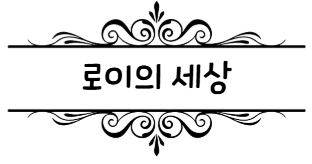
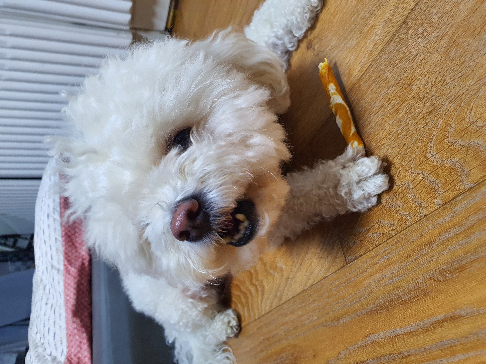
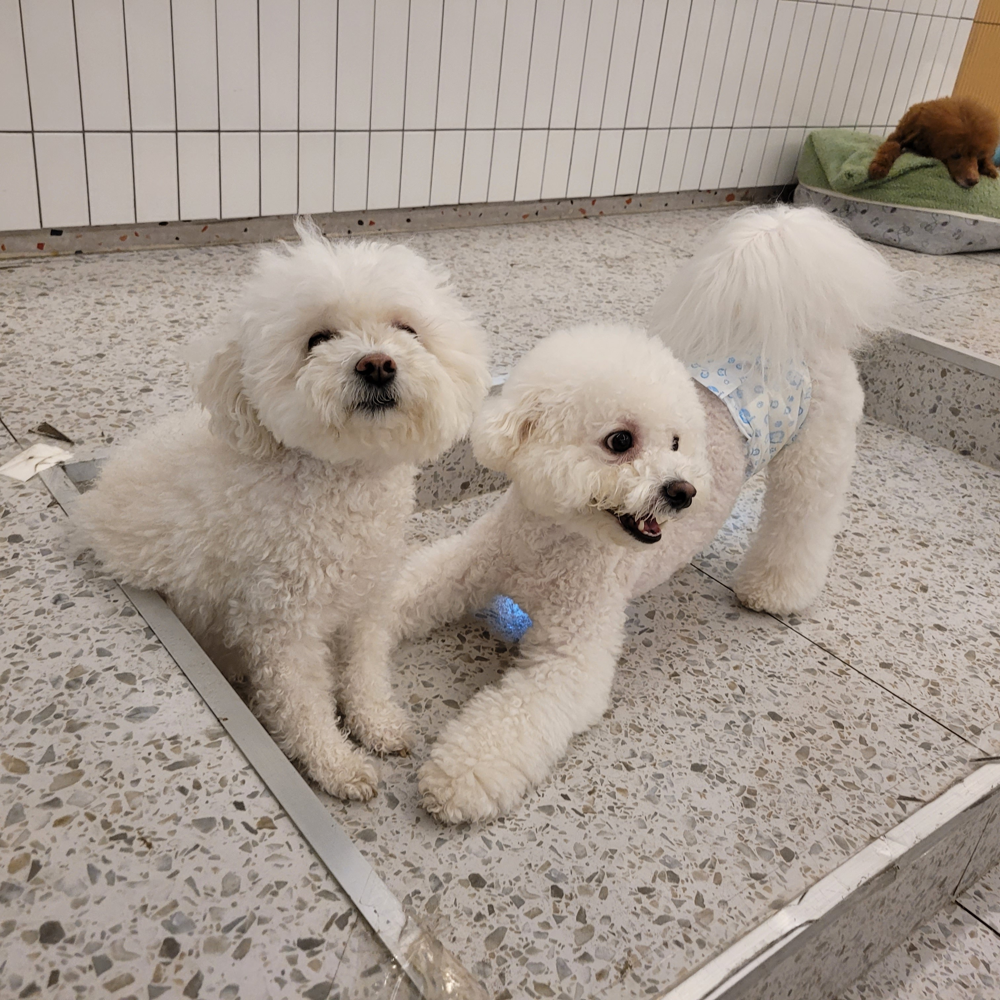

로이가 일어나서 하는 일
로이의 시점에서 본 세상은 어떨까? 아침에 일어나서 로이는 아마 내가 일어날 때까지 기다린다. 그리고 내가 시간이 될 때 산책을 나간다. 갔다 와서 배고프니까 밥을 먹는다. 또 내가 주는 간식을 먹는다. 엄마와 아빠가 오면 꼬리치며 반긴다. 밤이 되면 나랑 같이 잔다. 끝.

로이가 좋아하는 것, 싫어하는 것
일상적으로 사는 것은 그렇고, 특별한 일은 아마도 가족이 다 같이 양재천에 산책을 간다거나 스타필드에 마실을 간다거나 그런 것들이 있다. 아 그리고 로이는 다른 강아지들과 같이 목욕을 별로 안 좋아한다. 샤워가 제일 싫은 강아지.

로이의 사회생활
로이는 대체로 다른 강아지(특히 자기보다 어리고 작은)들을 되게 반가워한다. 산책 나가서 친구 만나는 게 제일 좋다. 하지만 리트리버는 정말 극혐~~ 리트리버는 보자마자 짖는다. 물론 로이가 덩치가 더 작지만 상관없다~~